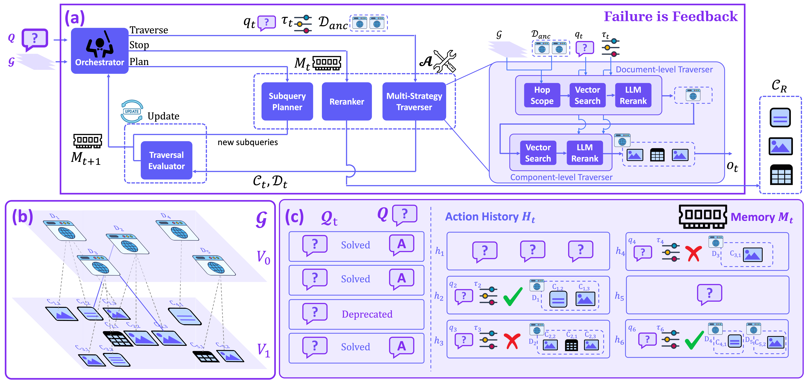
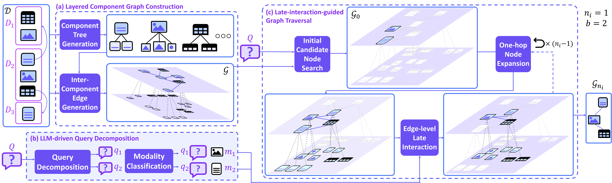
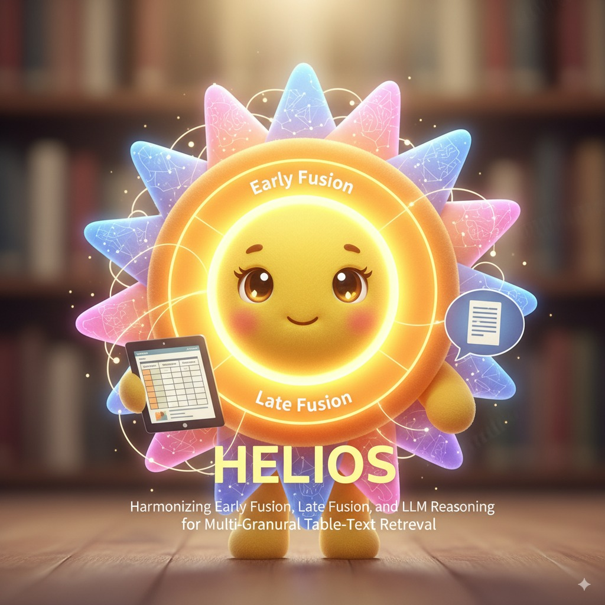
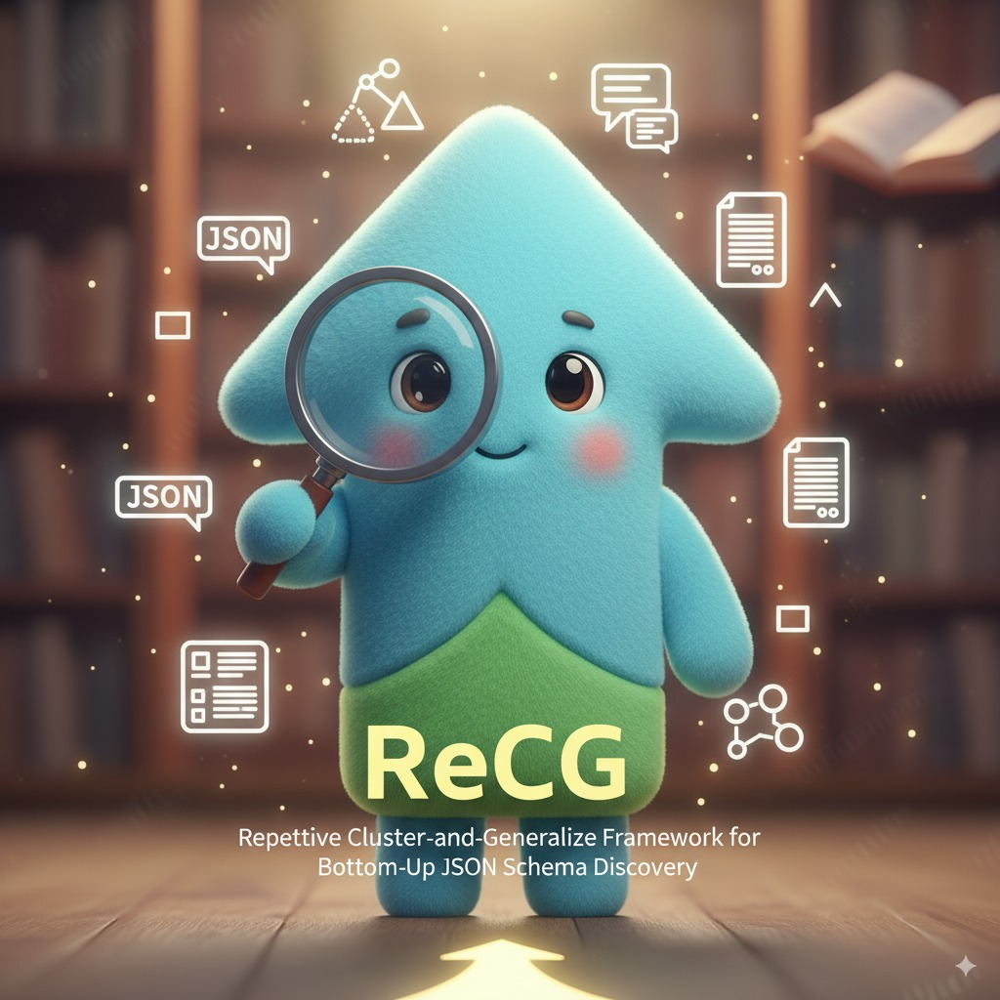
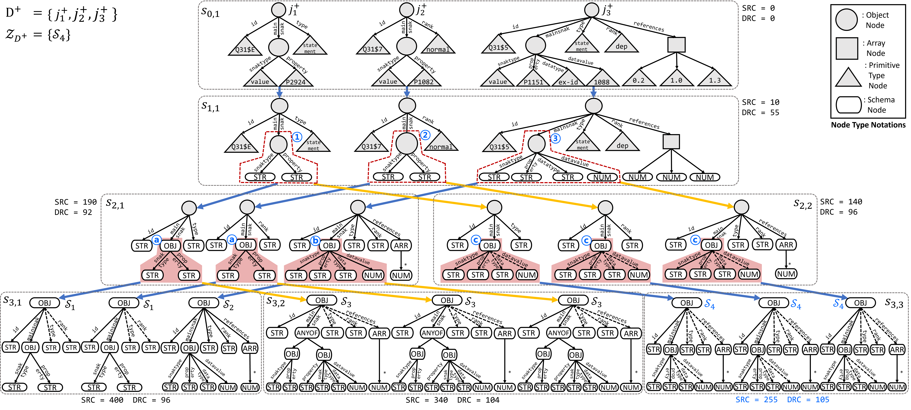
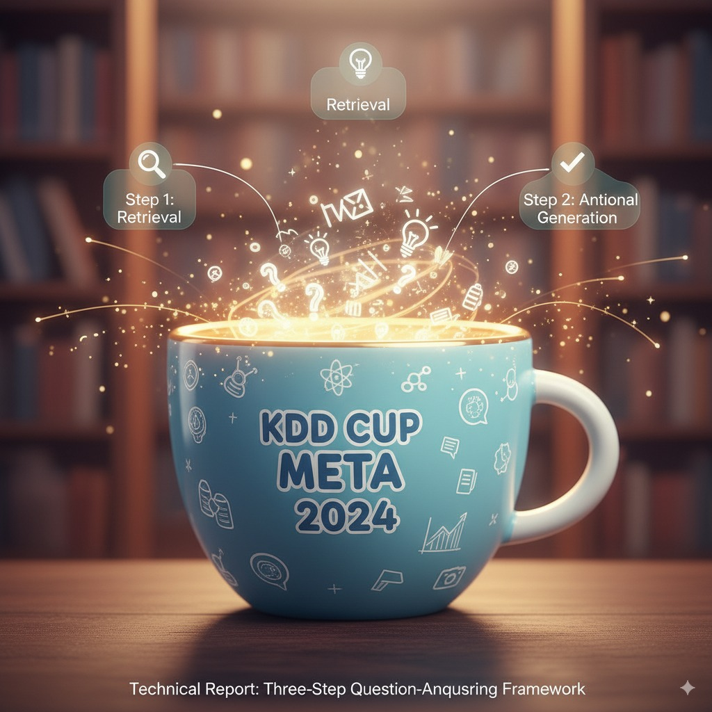
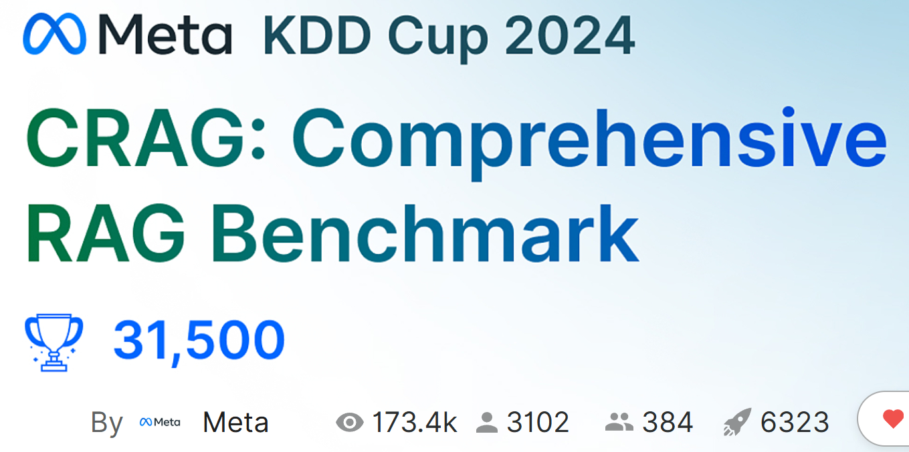

Problem: Multimodal documents—containing text, tables, and images—require retrieval systems that can traverse interconnected components to answer complex multi-hop questions. However, agentic retrieval faces a fundamental dilemma: committing to a path risks missing the optimal answer, while exploring all possibilities becomes computationally intractable.
Existing Research Issues: Current approaches either use static retrieval that cannot adapt to query-specific needs, or agentic methods that rely on greedy traversal without mechanisms for error recovery. These methods struggle when initial decisions lead to suboptimal paths, as they lack the ability to learn from mistakes and intelligently backtrack.
Our Research: We propose FiF (Failure is Feedback), a history-aware agentic multimodal retriever. FiF addresses the exploration-exploitation dilemma through an economically-rational workflow: the agent first commits to a path and, upon encountering failure signals, backtrack to a previous decision point and utilizes this feedback as valuable information to pursue alternative paths. By treating failures as informative feedback rather than dead ends, FiF achieves state-of-the-art performance on MultimodalQA, MMCoQA, and WebQA benchmarks while maintaining computational efficiency.

Problem: Multimodal document retrieval, where data comes from text, tables, and images, requires both granular retrieval and the ability to reason across different documents. The key issue is balancing retrieval precision and enabling complex reasoning across these different modalities.
Existing Research Issues: Current methods like VisRAG (which treats everything as visual content) face problems with insufficient granularity and poor multihop reasoning. They often miss interdependencies between components or the relationships within documents.
Our Research: LILaC introduces a two-layered component graph for multimodal retrieval. The coarse layer supports efficient candidate generation, while the fine-grained layer facilitates detailed reasoning. Using a late-interaction strategy, LILaC dynamically traverses the graph to retrieve relevant subgraphs, improving both precision and recall in multihop scenarios. Extensive experiments show that LILaC outperforms existing systems in terms of both retrieval accuracy and reasoning.


Problem: Multimodal document retrieval, especially when combining text, tables, and images, is challenging due to the need for effective reasoning across these different modalities and the issue of insufficient retrieval granularity.
Existing Research Issues: Prior methods like early fusion (which pre-aligns tables with passages) and late fusion (which aligns components dynamically) face limitations. Early fusion may retrieve irrelevant contexts, while late fusion risks missing important contexts, and both struggle with advanced reasoning tasks like multi-hop reasoning.
Our Research: We propose HELIOS, a framework that combines both early and late fusion techniques, followed by a reasoning step that uses LLMs to perform logical inference. By leveraging a layered graph structure, HELIOS achieves both high retrieval accuracy and efficient reasoning, outperforming existing systems across multiple benchmarks.



Problem: JSON documents are often schemaless, making it difficult to perform operations like querying, validation, and data management. Existing approaches for JSON schema discovery are top-down, which limits their ability to make accurate schema decisions for complex data.
Existing Research Issues: Top-down schema discovery methods struggle with incomplete visibility into child nodes, relying on heuristics that can lead to incorrect schema decisions. These methods also fail to handle heterogeneous data effectively.
Our Research: ReCG presents a bottom-up approach for discovering JSON schemas, starting from leaf nodes and generalizing upwards. This approach uses a clustering technique to identify schema patterns and minimizes schema complexity through the Minimum Description Length (MDL) principle. Our results show that ReCG significantly improves schema accuracy (up to 47%) and runs faster than state-of-the-art methods.



Problem: Large language models (LLMs) face challenges in question-answering tasks, particularly with hallucination—where answers deviate from real-world facts. The challenge is how to efficiently and accurately answer complex queries while minimizing hallucinations.
Existing Research Issues: Existing methods, such as Retrieval-Augmented Generation (RAG), attempt to improve LLMs by retrieving external knowledge, but often suffer from inefficiency, unnecessary retrievals, and propagation of incorrect information.
Our Research: We propose a three-step framework that improves the traditional RAG approach. First, it leverages LLM's parameterized knowledge to avoid unnecessary retrievals. Then, external sources are incorporated only when necessary. Finally, a verification step reassesses generated answers to ensure factual correctness, improving both accuracy and efficiency. Our approach has demonstrated significant improvements in multiple benchmarks.